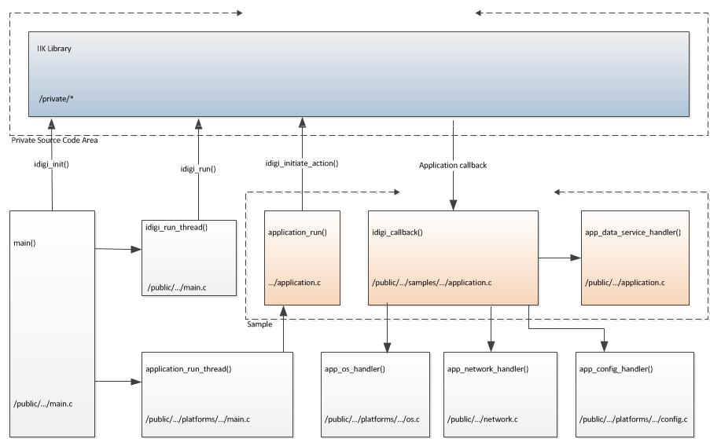

|
|
|
Overview
IntroductionThe iDigi Integration Kit (IIK) is a software development package used to communicate and exchange information between a device and the iDigi Device Cloud. iDigi supports application to device data interaction (messaging), application & device data storage, and remote management of devices. Devices are associated with the iDigi Device Cloud through the Internet or other wide area network connections, which allows for communication between the device, the iDigi Device Cloud, and customer applications. An important part of this communication is the transfer of data from a device to the iDigi Device Cloud. iDigi is based upon a cloud computing model that provides on-demand scalability so you can rest assured that when you need additional computing and storage, iDigi will scale to meet your needs. The iDigi Device Cloud is designed using a high-availability architecture, with redundancy and failover characteristics in mind. Using iDigi, customers can now easily develop cloud connected devices and applications that quickly scale from dozens to hundreds, thousands or even millions of endpoints. 
Language SupportThe IIK software provided is ANSI X3.159-1989 (ANSI C89) and ISO/IEC 9899:1999 (ANSI C99) compliant. The sample platforms provided use standard ANSI C calls which are available in most operating systems. If you are running on a Linux i486 based platform and using the GNU toolchain the Linux platform and samples can be run without any modifications. Platform Memory RequirementsThe IIK requires both Flash and RAM. Flash is needed to store instructions and variables. RAM is needed for dynamic allocation and program stack. Code Space EstimatesThe following Flash/Code space data was generated using Ubuntu 4.4.3 gcc for 32-bit i486 architecture using the compile_and_link sample application. The build was optimized for size (-Os) with IDIGI_COMPRESSION disabled in all cases. The metrics exclude any code space required for application layer calls. This information should be treated as a typical use case.
References to Text, rodata, data, and bss refer to program instructions, constant-read-only data, initialized global and static variables, and uninitialized zero-ed data, respectively. References to the Hard Coded Application Configuration options refers to the code reduction defines in idigi_config.h: IDIGI_DEVICE_TYPE, IDIGI_CLOUD_URL, IDIGI_TX_KEEPALIVE_IN_SECONDS, IDIGI_RX_KEEPALIVE_IN_SECONDS, IDIGI_WAIT_COUNT, IDIGI_VENDOR_ID, IDIGI_MSG_MAX_TRANSACTION, IDIGI_CONNECTION_TYPE, IDIGI_WAN_LINK_SPEED_IN_BITS_PER_SECOND, IDIGI_WAN_PHONE_NUMBER_DIALED, IDIGI_FIRMWARE_SUPPORT, and IDIGI_DATA_SERVICE_SUPPORT. Dynamic RAM UsageThe following dynamic RAM usage was developed by monitoring the high-water mark during the idigi_os_malloc application-defined callback.
Program Stack UsageThe following program stack usage was observed using gcc 4.2.0 compiled for a 32-bit ARM9 TDMI architecture.
This includes all code from within the private IIK library, but none of the code implemented in the application-defined callback. These metrics should be treated as typical. It is recommended that the actual program stack size used to call idigi_run() or idigi_step() be these metrics plus the amount of memory typical for handling a TCP network client, or a thread that accesses local configuration, or makes malloc/free OS calls, whichever is the worst case. IIK Features
Communicating with your deviceTo manage your device you can use the iDigi Manager Pro interface by logging into your iDigi Device Cloud account. Alternatively, you can communicate with your device programmatically by using iDigi Web Services. iDigi Web Services requests are sent from a remote application to the iDigi Device Cloud, which then directly communicates to the device. This allows for bidirectional machine to machine communication. Each IIK sample includes a Python application demonstrating how to communicate to a device using the iDigi Web Services. Threading ModelThe IIK can be deployed in a multithreaded (idigi_run()) or round robin control loop (idigi_step()) environment. In environments that include preemptive threading, the IIK can be implemented as a separate stand-alone thread by calling idigi_run(). This is a blocking call that only returns due to a major system failure. Alternatively, when threading is unavailable, in a round robin control loop or fixed state machine, the IIK can be implemented using the non-blocking idigi_step() call within the round robin control loop. Note in a cooperative, non-preemptive multithreaded environment, either idigi_run() or idigi_step() can used, based on system determinism and the potential for a non-cooperative thread to exceed the IIK's system timing.
Source Code OrganizationThe IIK source code is divided into two partitions, a private partition and a public Application Framework. The private partition includes the sources that implement the IIK public API. The public Application Framework includes a set of sample applications used for demonstration purposes.
Directory StructureWhen uncompressed the directory structure below will be created in the idigi directory. The public directory is divided into a step and run branch to easily distinguish the different thread modeling requirements.
Source Code HierarchyThe IIK is split into two separate partitions, a private partition and a public Application Framework. The private partition (IIK Library) includes source code that implements the IIK public API, plus all the internal code used to implement the iDigi Cloud protocol. This private partition should be treated as a black box and never used, changed, debugged or referenced directly. The public Application Framework partition is further divided in two: a Platform and Sample section. The Platform section is related to system specific porting dependencies (i.e., fleshing out operating system calls, networking, system configuration). The Sample section contains an application structure to cleanly interface between the Platform section and the IIK private partition. For instance, in a linux run thread model, the main() routine starts two threads: idigi_run_thread() and application_run_thread() in main.c. This file is located in the Platform section since it relies on threads (an operating system dependency). The idigi_run_thread() directly calls the IIK API idigi_run(), and the application_run_thread() calls application_run(). The application_run() function has no system dependencies and contains IIK specific functions, therefore, it resides within the Sample section. In the diagram below, the IIK Library is shown encapsulated within the dotted line on top (in the Private Source Code Area). The bottom is the Platform section, where the bottom left side shows main() calling idigi_init() and spawning the two threads. Also shown is the application_run_thread() calling application_run() in the Sample section. The Sample section is encapsulated within the dotted line on the center-right.

Based on the particular sample, application_run() could either make calls to idigi_initiate_action(), or could just return and complete. The diagram further shows the IIK Library making callbacks into the Sample section. The application callback function, initially passed to the IIK library via the idigi_init() call, will pass the callback request to the appropriate handler, which will either be in the Platform section for operating system, networking, or configuration callbacks; or remain locally handled (in the Sample section) for the Data Service callbacks. Porting GuidelinesThe IIK Getting Started process includes pulling the IIK into your local build environment, getting the private partition compiled and linked (using the compile_and_link sample) and then your platform ported. Once your platform is ported, you will verify and confirm your port using the connect_to_idigi sample. When porting, it is strongly recommended that you maintain the structure of the public Application Framework. Once porting, compilation and testing are complete, the you can dismantle this framework and incorporate the IIK into your environment as you see fit. When reusing the Application Framework, the largest effort will be updating the lowest layer of the Platform code. Specifically, the static operating system functions located in os.c, the networking functions in network.c and the configuration functions in config.c. There is no expectation that you will need to port any other code, with the exception of the changes required to get your code compiled. For example, the Application Framework includes code to handle an idigi_os_system_up_time callback in os.c. The function requires a stable system timer at one second resolution. In the linux platform example, the function is implemented using the POSIX standard time() function: int app_os_get_system_time(unsigned long * const uptime) { time((time_t *)uptime); return 0; } However, a platform that does not support POSIX time() might port this function as such: int app_os_get_system_time(unsigned long * const uptime) { // Note mysys_GetTickTime() returns the system up time in milliseconds extern unsigned long mysys_GetTickTime(void); *uptime = mysys_GetTickTime()/1000; return 0; } After converting all the static operating system, networking, and configuration functions, your porting effort is complete. How to debug your PortAfter porting and compiling, you will run the connect_to_idigi sample. We recommend that you carefully observe the standard output from the application. In particular, the idigi_config_error_status callback will display error data when porting errors are detected in the callbacks. Examples of successful and erroneous output streams are available. Getting StartedTo get started, follow along the steps of the Getting Started process. |